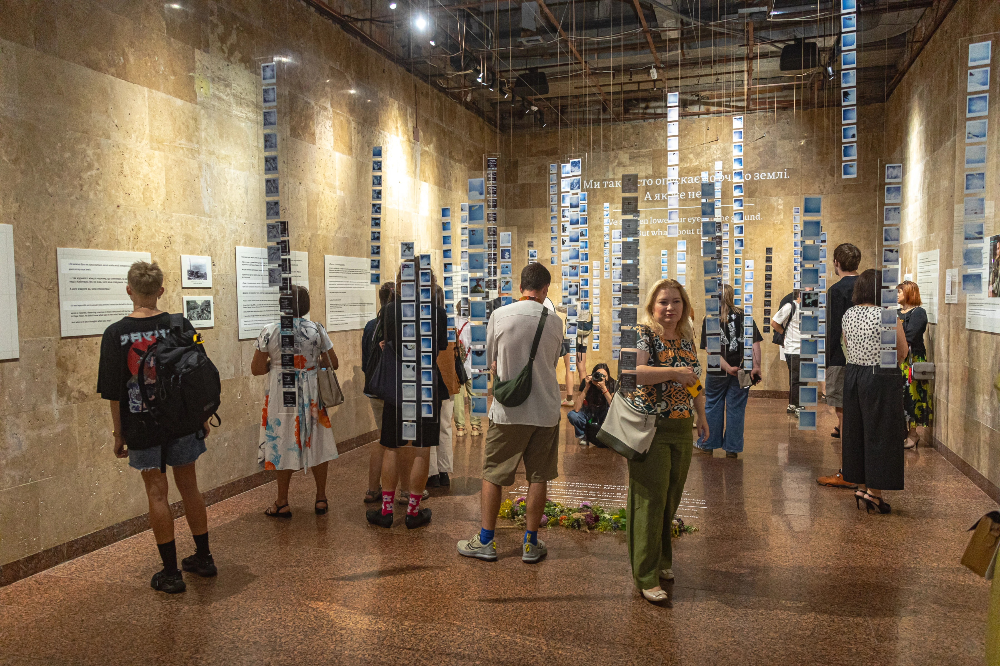

Памʼять у мистецтві
Мистецтво може зцілювати та руйнувати, ранити та лікувати. Ми активно долучаємось до творчих проєктів, які допомагають проживати втрати та перетворюють чорне горе на світлу памʼять.

В колаборації з Веронікою Моль та Музеєм війни, ми реалізували проєкт «Це може бути тиша». Експозиція поєднує документальну розповідь про те, як мовчання стало мовою скорботи, 470 фотографій неба над могилами воїнів, аудіальну інсталяцію з іменами загиблих.
Це виставка про мить, коли щодня о 9:00 ми зупиняємося, щоб згадати тих, кого вже немає поруч. І про те, як Хвилина мовчання поступово стає нашою спільною мовою.
Проєкти в межах діяльності
Усі проєкти
Інші напрями
Усі напрями-

Громади
Працюємо з громадами та координаторами осередків, допомагаємо створювати й впроваджувати локальні практики памʼяті. Поширюємо ініціативи в громадах, розробляємо ритуали памʼяті та прощання.
-

Бізнес
Допомагаємо бізнесу інтегрувати культуру памʼяті у свої комунікації. Проводимо консультації, аудити, лекції та сесії, щоб компанії могли говорити про війну, втрати й памʼять.